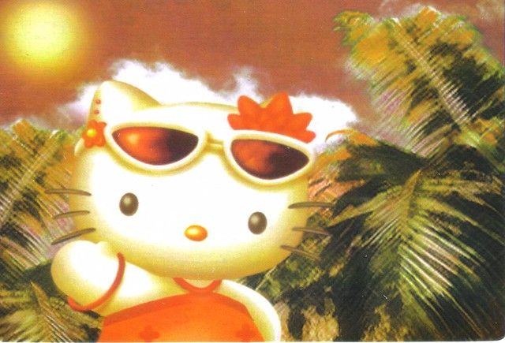

Hi. Welcome to my site filled with incoherent ramblings about random stuff.

If you're curious as to what 'thinking about the immortality of
the crab' means: “A Spanish idiom about daydreaming. The phrase is
usually a humorous way of saying that one was not sitting idly,
but engaged constructively in contemplation or letting one's mind
wander” (wikipedia)